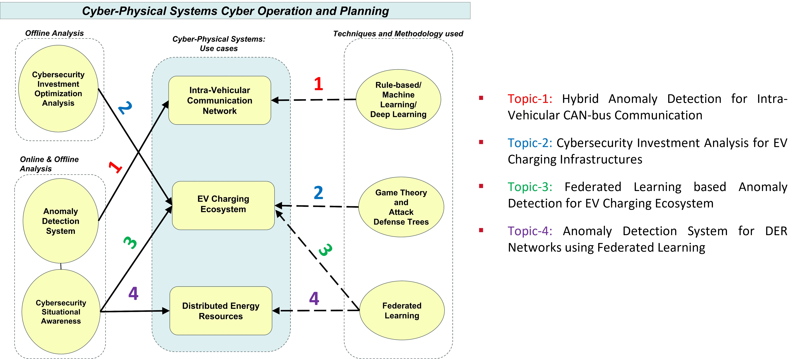

Shaurya Purohit
PhD Candidate Contact Information: |
About Me
-
I am a passionate and enthusiastic researcher, working primarily at the intersection of Machine Learning and Cyber Security
-
I am currently a PhD Candidate at Iowa State University in Computer Engineering, under the guidance of Prof. Manimaran Govindarasu
-
My research interests encompass a broad range of areas, including Machine Learning (ML), Deep Learning (DL), Federated Learning (FL), Cybersecurity, Game Theory (GT), Data Analysis, and their applications in enhancing the security and efficiency of critical systems.
Education
-
Iowa State University, Ames, Iowa, USA
Doctor of Philosophy (PhD)
Department of Electrical and Computer Engineering
August 2019 - December 2024
PhD Supervisor: Prof. Manimaran Govindarasu
-
Iowa State University, Ames, Iowa, USA
Masters of Engineering (Minor: Statistics)
Department of Electrical and Computer Engineering
August 2019 - May 2022
-
Manipal University Jaipur, Jaipur, India
Bachelors of Technology (B.Tech)
Information Technology
August 2015 - May 2019
PhD Research
-
I am currently working as a Research Assistant under the supervision of Dr. Manimaran Govindarasu in the PowerCyber Lab at Iowa State University, focusing on advanced topics in Cybersecurity, Machine Learning, and Federated Learning for Cyber-Physical Systems.
-
My research centers on developing cutting-edge Artificial Intelligence and Cybersecurity solutions for Anomaly and Intrusion Detection Systems, utilizing state-of-the-art techniques to enhance the security and reliability of Autonomous Vehicles, EV charging infrastructure, and DER communication against evolving cyber threats.
-
The summary of my PhD research projects are as follows:
-
We developed a Federated Learning-based Anomaly Detection System (FL-ADS) to enhance the security of communication protocols (DNP3, Modbus) in DER networks. The system was designed to operate across decentralized data sources, maintaining privacy while achieving superior detection accuracy (above 97%) compared to baseline models. The methodology was tested on real-world datasets, demonstrating significant improvements in F1-scores and overall system resilience. -
We designed a hybrid methodology integrating Attack-Defense Trees (ADTs) and Game Theory to optimize cybersecurity investments for Electric Vehicle Charging Stations. The model utilized the CIA triad and the MITRE ATT&CK framework to identify and prioritize attack surfaces, enabling defenders to allocate resources efficiently. The approach was validated through various real-world scenarios, ensuring its applicability to large-scale EVCS deployments. [Paper] -
This project was a collabration with Argonne National Laboratory where we designed and implemented FIRNet-G, an autonomous intelligent cyber defense system for power distribution grids. The system integrates federated learning and graph neural networks to detect and mitigate cyber threats in DNP3 traffic within a simulated multi-substation environment. The model was evaluated using the PowerCyber testbed , demonstrating effective detection of cyber-attacks and providing a scalable solution for grid cybersecurity. -
We developed a hybrid anomaly detection system combining rule-based techniques with deep neural networks to secure intra-vehicular communication networks. The system was specifically designed to prevent cyber-attacks on CAN-bus networks, achieving an accuracy of 95%. The enhanced journal version of this work improved accuracy to over 97% and reduced detection latency and the paper is currently under review. [Paper] -
We developed an FL-based anomaly detection framework tailored for EV charging ecosystem, focusing on enhancing data privacy and cybersecurity. The system demonstrated high accuracy and resilience across EV charging datasets, supporting the secure operation of EVCS infrastructures. [Paper] [Invited Talk]
-

